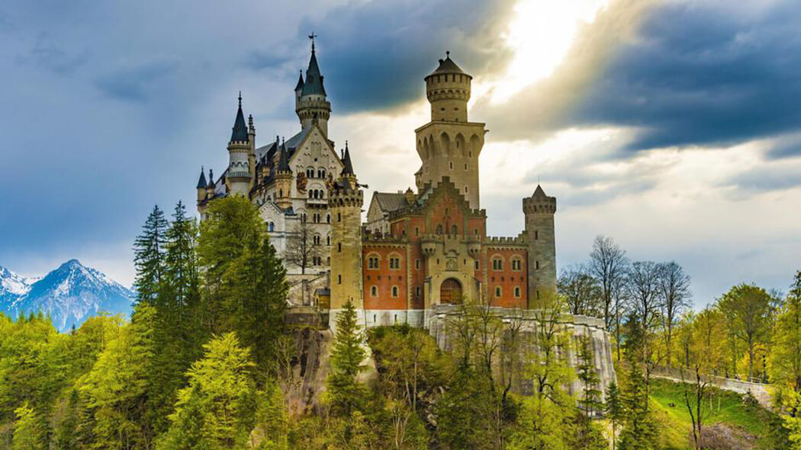
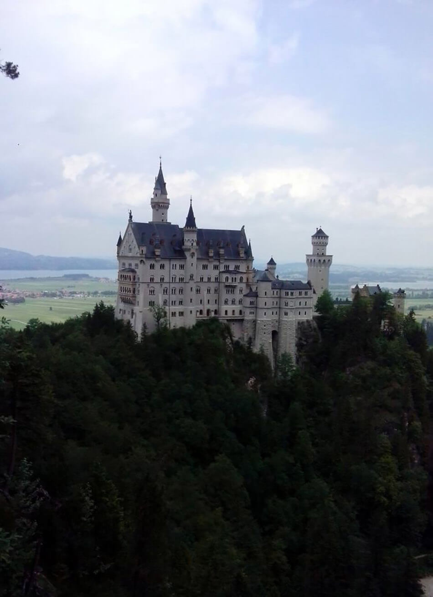
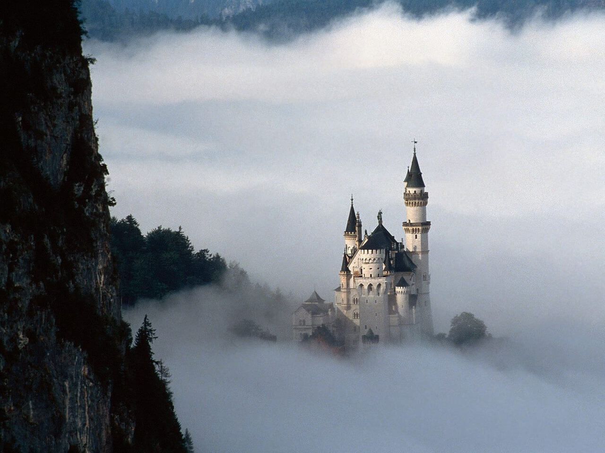
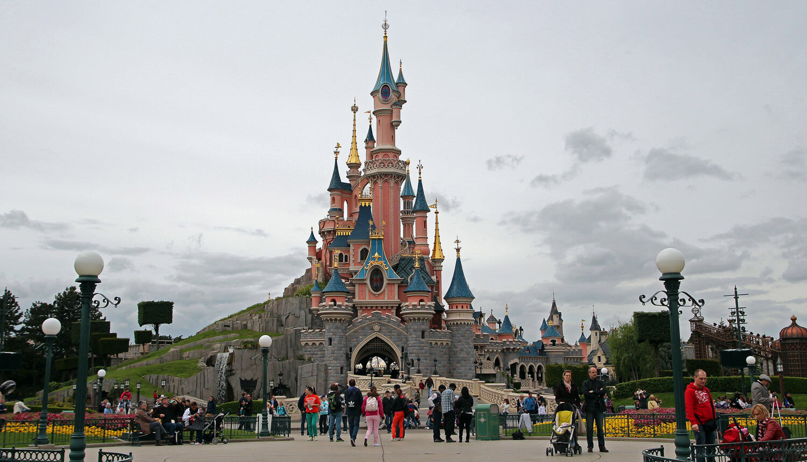
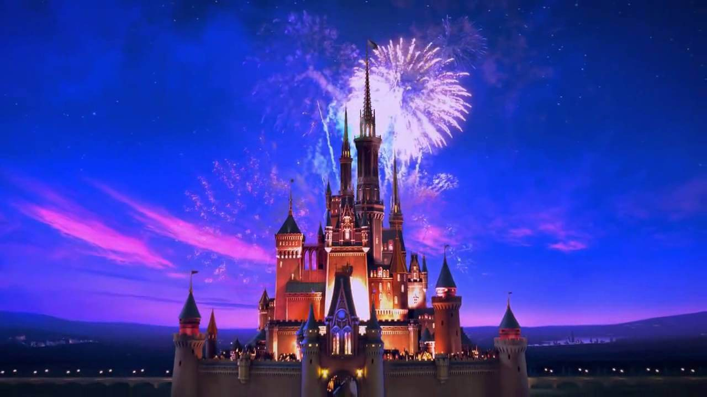
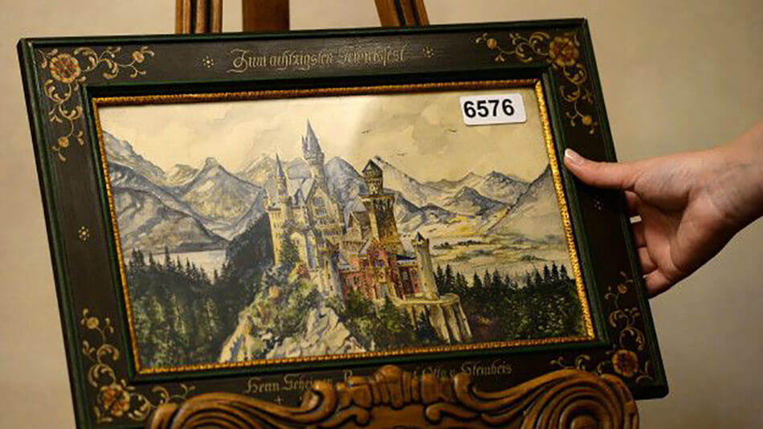

ЗАМОК НОЙШВАНШТАЙН
Если не вживую, то на открытках или фотографиях его видел почти каждый. Нойшванштайн строили с 1869 по 1886 год по приказу короля Людвига II. Он влез в огромные долги, чтобы построить сказочный замок, но сам прожил в нём чуть меньше полугода.

Вблизи городка Фюссен в юго-западной Баварии, невдалеке от австрийской границы располагается величественный замок Нойшванштайн. Он построен в неороманском архитектурном стиле.
Отреставрированный в 2009 году, замок теперь выглядит ещё более величественно и изящно.

В 1884 году строительные работы еще не были завершены, но король уже поселился в Нойшванштайне. Он прожил там всего 172 дня и был отстранен от власти за подозрения в помешательстве. Его фанатичное отношение к своим сказочным замкам погубили его. При воплощении своей мечты он стал терять связь с реальностью.
В 1886 году Людвиг II утонул в Штарнбергском озере при загадочных обстоятельствах. После смерти короля прекратились и строительные работы.

Всего во дворце 5 этажей и 110 комнат, из которых только 16 являются жилыми, а остальные так и не достроили. Интерьеры замка Нойшванштайн украшены символами из опер Вагнера, а также иллюстрациями из старинных германских легенд.
Чаще всего здесь встречаются лебединые мотивы из любимой оперы Людвига «Лоэнгрин». Изображения этих птиц не случайны, так как лебедь является геральдическим символом королевского рода.

Самой необыкновенной комнатой является тронный зал, он украшен полотнами с изображениями королей и религиозными фресками.

Примечательно, что самого трона здесь нет, есть только помост, к которому ведет лестница.

Особенным местом является комната, которая оформлена в виде сказочной пещеры – Грот с озером и небольшим водопадом. Когда парламент узнал о существовании декорированной пещеры в замке, Людвига признали умалишенным.

С обзорной площадки замка Нойшванштайн открывается великолепный вид на Альпы. Правее виднеется маленькая деревушка Швангау, а слева можно рассмотреть силуэт другого замка – Хоэншвангау, где провел свое детство Людвиг II.

Сложно пройти и мимо моста Мариенбрюке (Marienbrücke) над ущельем Поллат. Он был назван в честь матери короля Людвига – Марии. Отсюда открывается красивый вид на баварский замок Нойшванштайн и водопад.

Конструкция не для слабонервных, так как находится мост Марии на высоте 92 метра над землей. В зимнее время проход по мосту запрещен из соображений безопасности.

На строительство замка Нойшванштайн было потрачено 7,5 миллионов марок – это баснословные деньги на то время.
Король был должен кредиторам огромную сумму, после его смерти было принято решение открыть замок для платного посещения. В течение 13 лет за счет туристов долг был погашен.

Прототип Нойшванштайна можно узнать в замке Спящей красавицы в парижском Диснейленде.

Также похожий замок встречается в заставках мультипликационной студии Уолта Диснея.

Изображение замка Нойшванштайн увековечено и на картине Адольфа Гитлера. Китайский покупатель предложил за нее 100 тыс. евро на аукционе.
